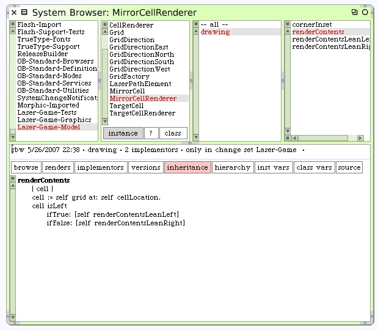
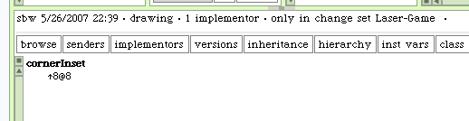
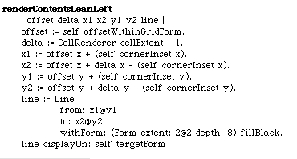
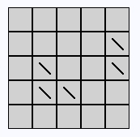
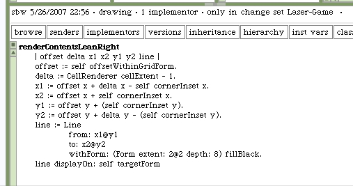
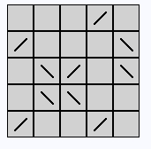

The mirror cells will draw their contents differently depending on which way they lean.
Create empty stub methods for #renderContentsLeanLeft and #renderContentsLeanRight for now.
We can use a method to answer the amount the mirror will be inset from the corners. This method can be used by both the left and right leaning methods.
Here's our first attempt at drawing the left leaning mirror. The right leaning code hasn't been written yet but will need to have the empty method defined before we rerun our workspace.
Try the workspace code and let's see what happens.
That's not bad. There's a few minor issues where it looks like the mirror is not quite in the center of the cell, but for a first attempt this looks great. Here's the lean right version of the method.
Here's the new drawing.
Let's compare this to the original diagram we used before we had any code written.